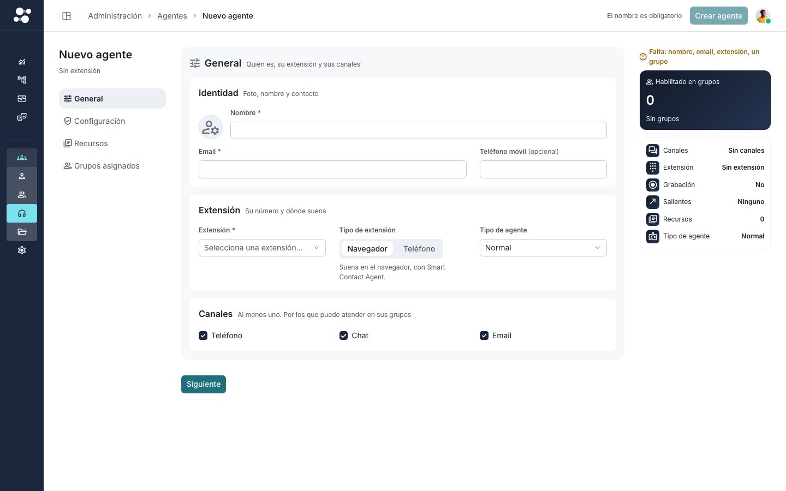

Smart Contact Design System / Supervisor
Un color para dirigir la atención
Qué color lleva el botón principal, y qué cuesta cambiarlo.
Propuesta, octubre de 2026Sin aplicar
El problema
¿Dónde se pulsa?
Por qué no se ve
El botón es del mismo marino que todo lo demás
2%
del marino de esta pantalla es el botón.
El resto es barra lateral, tarjeta, iconos y casillas. El ojo va a lo grande.
Otros SaaS
También son sobrios, y el botón se ve a la primera
Atlassian azul
Notion azul
Vercel tinta neutra
GitLab tinta neutra
GitHub verde propio
Linear color propio
17 sistemas de diseño
Tres caminos. Ninguno es cian.
8
Azul de interacción
IBMSalesforceMicrosoftAtlassianZendeskTwilioGenesysNotion
COMO NUESTRO OSCURO
5
Tinta neutra
VercelShopifyGitLabAdobeFreshworks
COMO NUESTRO CLARO
4
Color propio
StripeLinearAircallGitHub
0
Cian
SERÍA IDENTIDAD PROPIA
10 de los 17 lo escriben: un botón principal por vista.
Qué tonos quedan
Casi cada tono ya significa algo
- Verde, ámbar y rojo: estados.
- Azul: la marca y el enlace.
- Violeta: suena a interfaz hecha con IA.
- Cian: libre. Ya es nuestro, en la barra lateral.
Ocho candidatos
Medidos en claro y en oscuro
Marino, hoy
14,96 claro, 8,24 oscuro
Contrasta, pero no destaca
Hoy
Azul 600
6,80 claro, 8,24 oscuro
Como nuestro oscuro
Recomendable
Cian 700
5,64 claro, 11,69 oscuro
Nuestro cian, accesible
Recomendable
Teal 700
5,47 claro, 11,98 oscuro
Roza el verde de éxito
Con matices
Cian 400
8,55 claro, 8,55 oscuro
Contra el blanco, 1,75:1
Con matices
Verde 700
5,02 claro, 10,17 oscuro
Es el verde de éxito
Descartado
Naranja 700
5,18 claro, 7,83 oscuro
Se confunde con peligro
Descartado
Violeta 700
7,10 claro, 6,51 oscuro
Suena a IA
Descartado
Contraste del texto del botón. Se pide 4,5:1.
En pantallas reales
Así se vería

HoyCian 700
5,64:1
contraste del texto del botón
Nuestro cian, oscurecido para que pase con texto blanco.
¿Es un solo cambio?
No. El botón comparte su variable con 33 sitios
Probado Con cian 400 en esa variable, cambian 9 de 12 piezas de un alta y 8 no llegan al contraste.
La forma sencilla
Solo el botón: se decide en Figma
FigmaRepuntar el botónbutton/primary
Se genera soloSu variable propia--sc-cmp-button-primary-*
Un ficheroEl preset la leebutton.ts
ResultadoCambia 1 pieza de 12el resto, igual
Atajo Toda la variable: 9 de 12 cambian.
Propuesta Solo el botón: 1 de 12.
Las reglas
Siete reglas para el color
- Un trabajo y pocos sitiosMás color reparte la atención.
- Un botón principal por vistaEl resto, secundarios.
- Su color es solo del botónCasillas y selección no lo heredan.
- Un color claro va de fondoCon texto oscuro. Nunca letra clara sobre blanco.
- Ni violeta ni moradoTampoco para la IA.
- El acento es lo que se pulsaUna cifra va en el color de los títulos.
- Un color nuevo se mide antesTono, contraste en los dos temas y daltonismo.
Qué decidimos
Cuatro opciones que pasan
GuardarRecomendableAzul 600
Lo que hace la mayoría y nuestro oscuro. Cerca de la marca.
GuardarRecomendableCian 700
Nuestro cian, accesible en los dos temas. Apagado.
GuardarCon maticesTeal 700
Funciona en oscuro. Cerca del verde de éxito.
GuardarCon maticesCian 400
El más vivo. En claro se pierde contra el blanco.
Ahora no Grupos y agentes están pasando a Figma. Después: Figma, el preset, contraste y una DD. Tocarlo en el Lab ↗
Un color para dirigir la atención